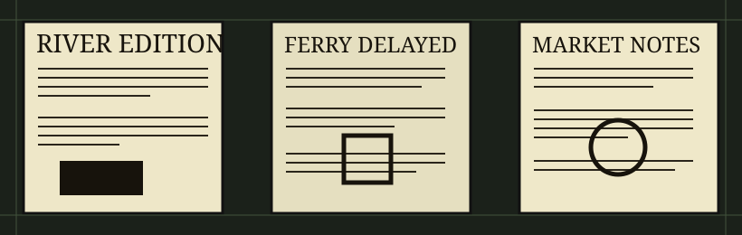

Newspaper Strip, 3 May 1938
Three adjacent newspaper fragments filmed together. The center column is crisp; the left edge buckles like it was pasted down in a hurry.
INK: UNEVEN
EDGE: TORN

River Edition. Ferry service paused after a cable inspection found a frayed section near the south landing. Passengers were told to use the bridge trolley, which was also late.
Market Notes. Eggs held steady. Coal rose two cents. A crate of lemons arrived wet and was described as "argumentative" in the margin of the clerk's sheet.
Wharf notice. The wharf house posted revised hours: six to dusk, except on flood days, pay days, and days when the bell rope was missing.
Why this strip matters: minor civic notices often explain later records better than headline articles. A ferry delay can move a court date, spoil a market, and make three unrelated cards agree.